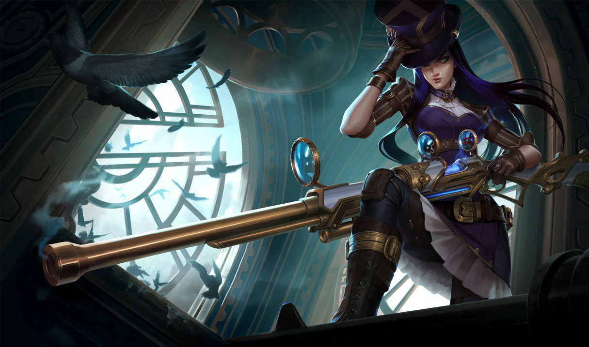

Caitlyn
Conhecida como sua melhor pacificadora, Caitlyn também é a melhor escolha de Piltover para livrar a cidade de seus elementos criminosos elusivos. É comum que ela faça dupla com Vi, agindo como um contraponto de calmaria para a natureza impetuosa de sua parceira. Mesmo carregando um rifle hextec único, a arma mais poderosa de Caitlyn é seu intelecto superior, que permite que ela prepare elaboradas armadilhas para qualquer fora da lei tolo o suficiente para operar na Cidade do Progresso.